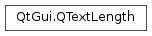

QTextLength¶
Synopsis¶
Detailed Description¶
The
PySide2.QtGui.QTextLengthclass encapsulates the different types of length used in aPySide2.QtGui.QTextDocument.When we specify a value for the length of an element in a text document, we often need to provide some other information so that the length is used in the way we expect. For example, when we specify a table width, the value can represent a fixed number of pixels, or it can be a percentage value. This information changes both the meaning of the value and the way it is used.
Generally, this class is used to specify table widths. These can be specified either as a fixed amount of pixels, as a percentage of the containing frame’s width, or by a variable width that allows it to take up just the space it requires.
See also
-
class
PySide2.QtGui.QTextLength¶ -
class
PySide2.QtGui.QTextLength(type, value) -
class
PySide2.QtGui.QTextLength(QTextLength) Parameters: - value –
PySide2.QtCore.qreal - type –
PySide2.QtGui.QTextLength.Type - QTextLength –
PySide2.QtGui.QTextLength
Constructs a new length object which represents a variable size.
Constructs a new length object of the given
typeandvalue.- value –
-
PySide2.QtGui.QTextLength.Type¶ This enum describes the different types a length object can have.
Constant Description QTextLength.VariableLength The width of the object is variable QTextLength.FixedLength The width of the object is fixed QTextLength.PercentageLength The width of the object is in percentage of the maximum width See also
-
PySide2.QtGui.QTextLength.__ne__(other)¶ Parameters: other – PySide2.QtGui.QTextLengthReturn type: PySide2.QtCore.boolReturns
trueif this text length is different from theothertext length.
-
PySide2.QtGui.QTextLength.__eq__(other)¶ Parameters: other – PySide2.QtGui.QTextLengthReturn type: PySide2.QtCore.boolReturns
trueif this text length is the same as theothertext length.
-
PySide2.QtGui.QTextLength.rawValue()¶ Return type: PySide2.QtCore.qrealReturns the constraint value that is specific for the type of the length. If the length is
QTextLength.PercentageLengththen the raw value is in percent, in the range of 0 to 100. If the length isQTextLength.FixedLengththen that fixed amount is returned. For variable lengths, zero is returned.
-
PySide2.QtGui.QTextLength.type()¶ Return type: PySide2.QtGui.QTextLength.TypeReturns the type of this length object.
See also
QTextLength.Type
-
PySide2.QtGui.QTextLength.value(maximumLength)¶ Parameters: maximumLength – PySide2.QtCore.qrealReturn type: PySide2.QtCore.qrealReturns the effective length, constrained by the type of the length object and the specified
maximumLength.See also
© 2018 The Qt Company Ltd. Documentation contributions included herein are the copyrights of their respective owners. The documentation provided herein is licensed under the terms of the GNU Free Documentation License version 1.3 as published by the Free Software Foundation. Qt and respective logos are trademarks of The Qt Company Ltd. in Finland and/or other countries worldwide. All other trademarks are property of their respective owners.